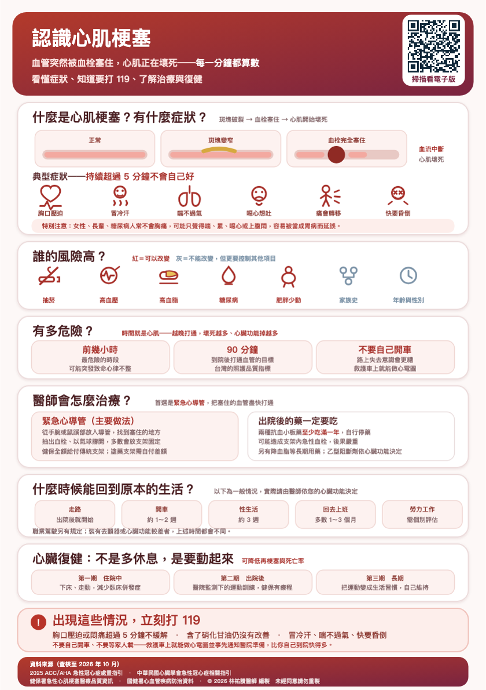

🏃
心臟復健怎麼做？
主題 8／9心肌梗塞之後不是要多休息。以前認為心臟受過傷就要靜養，現在完全相反。有醫療監測的規律運動訓練，能改善體能、減少症狀，並且降低再次梗塞跟死亡的機會。
心臟復健分成三個階段。第一期在住院中，病況穩定後就開始下床、走動。第二期在出院後，在醫院有監測的情況下進行運動訓練，這是最關鍵的階段。第三期是長期維持，把運動變成生活習慣。
心臟復健在台灣是健保給付的項目，但各醫院是否設有心臟復健中心並不一致。這是一項要主動開口才會啟動的資源，請直接問醫師：我可以做心臟復健嗎？下載原始 A5 衛教單查看原始衛教圖卡

點選圖卡可開啟大圖。原稿來源與說明
資料來源（查核至 2026 年 10 月）：
2025 ACC/AHA 急性冠心症處置指引；中華民國心臟學會急性冠心症相關指引；
健保署急性心肌梗塞醫療品質資訊；國健署心血管疾病防治資料。本單張供衛教，不取代個別診療。
© 2026 林祐賸醫師 編製 未經同意請勿重製。